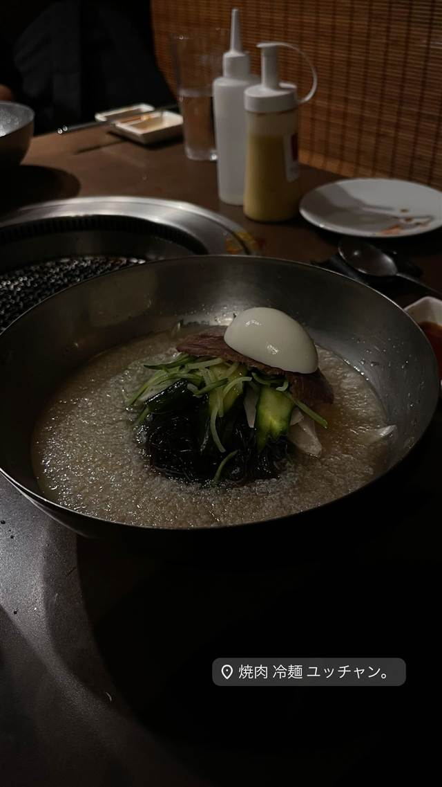

焼肉 冷麺 ユッチャン。
ハワイの冷麺専門店が日本初出店、名物は牛骨シャーベットの葛冷麺
焼肉 冷麺 ユッチャン。
WHY GO
ハワイの人気冷麺店の日本初出店で、葛粉麺とシャーベット状スープの葛冷麺が名物
ハワイで人気の冷麺専門店が日本に初出店した六本木の店。そば粉と葛粉を練り込んだ黒い麺と、牛骨スープをシャーベット状に凍らせた冷麺『葛冷麺』が看板で、ハワイの料理コンテストで1位を獲得した実績を持つ。
TRIVIA
豆知識
- ハワイで人気の冷麺専門店の日本初出店
- 麺が黒いのはそば粉と葛粉を練り込んでいるため
REVIEWS
世間の評判
3.65食べログ
名物冷麺とタン塩の満足度
- シャリシャリに凍った濃厚スープの名物冷麺を絶賛する声が多い
- タン塩やサシの入った和牛など肉の質の高さを高く評価する声が多い
- 六本木という立地や味のクオリティを考えると価格が良心的という声が多い
- お手洗いが1つしかない点やご飯が硬いという指摘も一部で見られる
食べログ 口コミ2113件
| 系譜 | ハワイで人気の冷麺店の日本第1号店として六本木に出店 |
|---|---|
| 看板 | 葛冷麺（そば粉と葛粉を練り込んだ黒い細麺） |
| こだわり | そば粉と葛粉を練り込んだ麺と、牛骨ベースの澄んだスープをシャーベット状に凍らせたスープが特徴。肉は『吉澤畜産』から仕入れる |
| 掲載・評価 | 『111-HAWAII AWARD 2017』韓国料理部門で1位を獲得した『葛冷麺』を提供 |
| どこから | 都心 |
| 営業時間 | 月〜水 11:30-15:00、17:00-00:00 木〜土 11:30-15:00、17:00-05:00 日 11:30-15:00、17:00-00:00 |
| 予算 | 夜 ¥8,000～¥9,999 |
| 場所 | 六本木 東京都港区六本木 |
食べたもの：冷麺
NEARBY
近い店・同じ系統の店
-
 ★
醤油・中華そば 六本木駅
入鹿TOKYO 六本木店
鶏・豚・貝・海老を別々に炊く独自のカルテットスープ
昼 ¥1,000～¥1,999 夜 ¥1,000～¥1,999
★
醤油・中華そば 六本木駅
入鹿TOKYO 六本木店
鶏・豚・貝・海老を別々に炊く独自のカルテットスープ
昼 ¥1,000～¥1,999 夜 ¥1,000～¥1,999
-
 ★
焼肉 白金高輪駅
炭焼 金竜山
ロンドン帰りの店主夫妻が焼く上タン塩とシャトーブリアン
夜 ¥20,000～¥29,999
★
焼肉 白金高輪駅
炭焼 金竜山
ロンドン帰りの店主夫妻が焼く上タン塩とシャトーブリアン
夜 ¥20,000～¥29,999
-
 ★
焼肉 関内駅
関内苑 本店
韓国職人仕込みのキムチとA5和牛の手打ち冷麺
昼 ¥1,000～¥1,999
★
焼肉 関内駅
関内苑 本店
韓国職人仕込みのキムチとA5和牛の手打ち冷麺
昼 ¥1,000～¥1,999
-
 ★
焼肉 鶯谷駅
焼肉 鶯谷園
1968年創業、半世紀以上続く良心価格の厚切りタン
夜 ¥6,000～¥7,999
★
焼肉 鶯谷駅
焼肉 鶯谷園
1968年創業、半世紀以上続く良心価格の厚切りタン
夜 ¥6,000～¥7,999
-
 ★
焼肉 不動前
焼肉しみず
牛タンの中心部だけを使う厚切り黒毛和牛タン
夜 ¥10,000～¥14,999
★
焼肉 不動前
焼肉しみず
牛タンの中心部だけを使う厚切り黒毛和牛タン
夜 ¥10,000～¥14,999
-
 ★
焼肉 飯田橋駅
好ちゃん 飯田橋本店
食べログ百名店に6年連続選出されたホルモン焼肉
夜 ¥6,000～¥7,999
★
焼肉 飯田橋駅
好ちゃん 飯田橋本店
食べログ百名店に6年連続選出されたホルモン焼肉
夜 ¥6,000～¥7,999